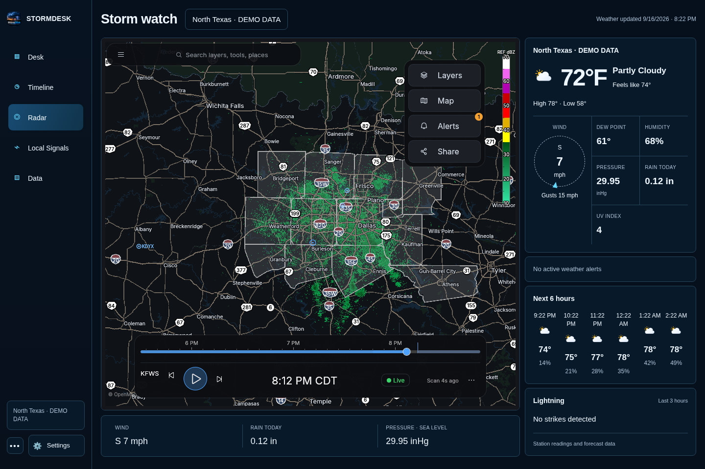
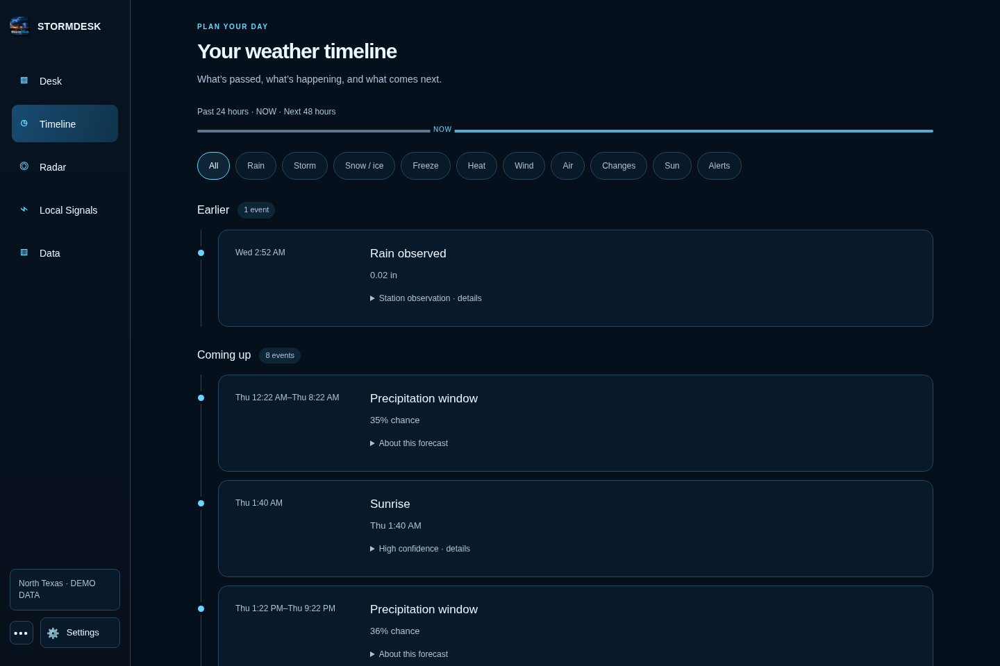
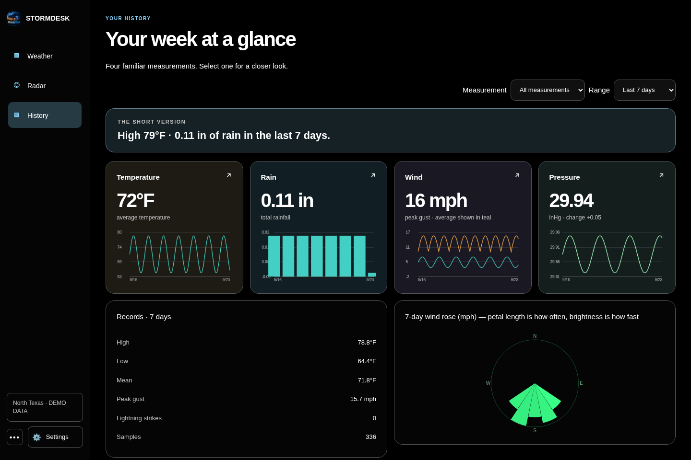
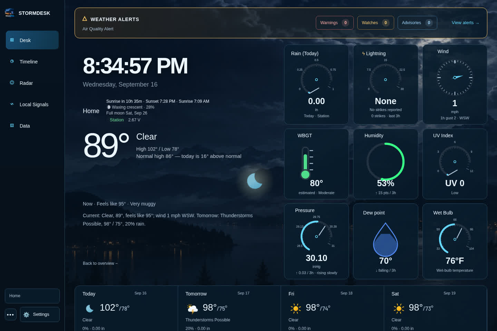
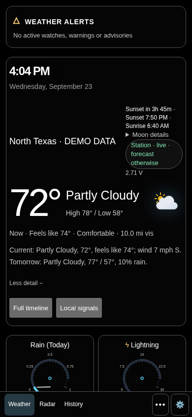

{kind=link}
01 / Track the storm
Radar with your weather beside it.
Explore the radar map while keeping current conditions, wind, rainfall and the near-term outlook in view.
Explore severe-weather tools →
Free. Open source. Ready for your weather.
Watch the wind shift. See the next rain coming. Follow a storm from the first warning to your local radar—all in a dashboard that feels like yours.
More than a temperature reading
A quick glance before heading out. A closer look when a storm rolls in. Explore the tools that turn readings into useful context.
Explore the radar map while keeping current conditions, wind, rainfall and the near-term outlook in view.
Explore severe-weather tools →
Rain windows, temperature changes and official alerts in time order. See what happened and what is on the way.

Explore temperature trends, rainfall totals and wind patterns in your local archive. Keep the detail when a daily high and low are not enough.

Bring your own station
StormDesk connects directly or through the tools your station already supports. Start with a forecast anywhere in the world, then add station readings when you are ready.
Severe-weather awareness
Official alerts stay separate and visible. Radar and the weather timeline put observed conditions beside the forecast so warnings have context.
Official NWS alerts and the current radar experience are US-first. Forecasts work worldwide. Reliable notifications while the browser is closed require a running StormDesk desktop or headless host.


Weather around your home
Run StormDesk on a computer, then view the same household weather on phones, tablets, laptops, and wall displays. Each screen keeps its own theme, density, and layout preferences.
Don’t own a station? Search for a place and use StormDesk as a worldwide forecast dashboard.
Free and open source
StormDesk is free under the MIT license. There are no StormDesk accounts, advertisements, or subscription tiers. Your station archive stays on the host you control.
Use the browser app or download StormDesk for Windows, macOS, Linux, Raspberry Pi, and Android.
Read the source, report a problem, or contribute improvements through the public GitHub repository.
The website has no analytics scripts, and StormDesk does not require a product account.
Common questions
No. Choose “Weather for a place,” search for your town or postcode, and StormDesk will use worldwide forecast data.
Yes. A running StormDesk host can serve your household devices. Presentation settings stay local to each screen.
Returning to the same address preserves that browser’s settings. Moving from stormdesk.pages.dev to app.mystormdesk.com creates a new browser origin, so you will need to set up or pair that address once.
Start with the setup and troubleshooting guide. If the answer is not there, open an issue on GitHub.